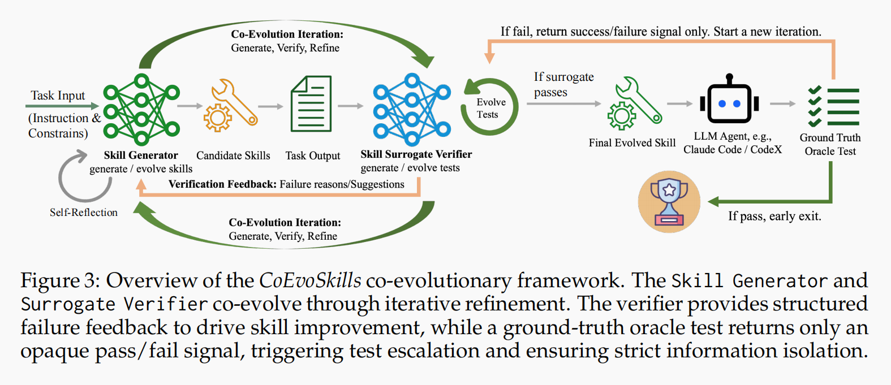

CoEvoSkills: Self-Evolving Agent Skills via Co-Evolutionary Verification
论文信息：Hanrong Zhang et al., arXiv:2604.01687v2 (2026.04)。 论文原文 提出 CoEvoSkills——一个让 skill generator 和 surrogate verifier 协同进化的框架，一边迭代修 skill，一边迭代补测试，用迭代验证替代一次性写 skill，自动提升 agent skills 质量。
1. 摘要 (Abstract)
- 核心问题：复杂 agent 任务往往需要的不是单个 tool， 而是一整套可复用 skill package，包括操作说明、脚本代码和参考资料。
- 现有不足：
- 人工写 skill 成本高，难规模化；
- 一次性 self-generate skill 质量不稳定；
- 真实环境里通常只有 pass/fail，拿不到隐藏测试的具体错误信息。
- 提出方案 (CoEvoSkills)：
- 用 Skill Generator 生成和修补多文件 skill；
- 用 Surrogate Verifier 独立构造代理测试并给出可操作反馈；
- 两者交替迭代，让 skill quality 在验证驱动下持续提升。
- 效果：在 SkillsBench 上，CoEvoSkills 在 Claude Code / Codex 设置下 都显著优于 no-skill、one-pass self-generation 和 human-authored skills， 且能迁移到多个模型家族。
2. 引言 (Introduction)
- 背景：许多开放式专业任务不是“调一个 API”就能完成， 而是要依赖一整套多步骤 workflow：分析任务、写脚本、执行、检查、修复。
- tool 与 skill 的差别：
- tool 更像单函数能力；
- skill 更像可复用的 SOP package，包含 instructions、code、references。
- 作者的关键判断：过去很多自进化方法适合 tool generation， 但不适合这种多文件、跨步骤协同的 skill creation。
- 人工技能的问题：人类专家设计的 skill 未必适合 LLM agent 的实际工作方式； 存在 human-machine cognitive misalignment， 所以人工 skill 在某些领域甚至会拖累表现。
- CoEvoSkills 的定位：不是一次 prompt 写出 skill 就结束， 而是把 skill creation 变成一个 生成—验证—修正 的持续演化过程。
3. 相关工作 (Related Work)
- Tool self-improvement：很多已有工作聚焦单函数、单文件或 prompt heuristic， 更适合 tool generation，不适合复杂 multi-file skill package。
- Human-authored skills：如 Anthropic Skills 一类工作强调 skill 的工程组织方式， 但 CoEvoSkills 更进一步，关注 skill 如何被 agent 自动进化出来。
- One-shot self-generation：论文表明只靠一次 self-generate， 效果接近 no-skill baseline，真正有效的是验证驱动的 iterative evolution。
- 本文定位：把“agent 自我提升”从写工具、写 prompt、存记忆， 推进到 自动构建并演化 skill packages。
4. 方法论 (Methodology) —— 核心章节
4.1 问题设定：隐藏真值下的技能构建
- 论文考虑的环境里，agent 在文件系统 / 进程环境中执行任务。
- agent 看不到隐藏 oracle tests，只能观察自己的执行结果， 最终拿到一个近似黑盒的 success / failure 信号。
- 目标不是直接完成某次任务， 而是构造出一个在后续任务中可复用的 skill package。
- 这里的 skill 不是单个函数调用， 而是一个多文件 bundle，通常包括：
- procedural instructions；
- executable scripts / code；
- domain references。
4.2 为什么需要 co-evolutionary verification
- 如果只做一次性 self-generation：
- skill 很容易遗漏边界条件；
- 多文件内容之间可能不一致；
- 没有足够反馈时，模型很难知道该修哪里。
- 真实系统里又常常拿不到 oracle 的具体测试内容， 所以不能简单依赖 hidden tests 反向修补。
- CoEvoSkills 的核心洞见是： 既然拿不到真值细节，就让 verifier 自己也进化，持续逼近隐藏要求。

4.3 总体框架：Generator 与 Verifier 共同进化
CoEvoSkills 由三部分组成：
- Skill Generator：负责生成初始 skill，并根据反馈持续改写。
- Surrogate Verifier：负责构造代理测试、评估输出并生成诊断建议。
- Ground-truth Oracle：隐藏真值验证器，只返回最终 reward / pass-fail。
整体循环可以概括为：
- 初始化任务描述与 meta-skill；
- generator 产出一个多文件 skill；
- 执行该 skill，得到输出 artifact；
- verifier 用代理测试检查输出；
- 若代理测试失败：给出 failure analysis 和 revision advice；
- generator 根据反馈修改 skill；
- 若代理测试通过：再交给 hidden oracle；
- 若 oracle 失败：不暴露真值细节，而是促使 verifier 强化测试；
-
循环直到预算耗尽或 skill 成功通过 oracle。
-
本质上：skill refinement 和 test escalation 是同步发生的。
- 这不是单边优化 skill，而是 skill 与 verifier 一起向隐藏标准逼近。
4.4 Skill Generator：不是重写，而是迭代修补
- generator 会保留持久上下文，包含：
- 当前任务；
- skill creation 的 meta-skill；
- verifier 过往反馈；
- 之前版本的 skill。
- 它不是每轮从零开始生成， 而是基于已有版本做局部修补和结构调整。
- 这样做的好处是：
- 更容易保留已验证正确的部分；
- 能把反馈逐轮积累进 skill；
- 降低多文件 bundle 在重写中崩掉的概率。
4.5 Surrogate Verifier：在看不到真值时制造密集反馈
- verifier 在单独的 LLM session 中运行， 与 generator 的内部推理和 skill 内容隔离，减少 self-confirming bias。
- 它可访问的信息主要是：
- 任务说明；
- 当前输出 artifacts；
- 之前构造的 proxy test suite。
- verifier 会生成一组确定性断言 / 检查规则， 给出 proxy score = 通过断言的比例。
- 当代理测试失败时，它返回：
- 哪些测试失败；
- 可能的根因；
- 可执行的修正建议。
-
当代理测试通过但 oracle 仍失败时， verifier 会进一步扩充或强化自己的测试集， 以逼近隐藏要求。
-
关键意义：oracle 只给稀疏 reward， surrogate verifier 则把这个稀疏信号转成高密度、可操作的调试反馈。
4.6 Skill 选择与停止条件
- 若某一轮 skill 完整通过 oracle，则直接返回该版本。
- 否则系统会保存历史上 oracle 表现最好的 skill snapshot。
- 当预算、迭代次数或上下文长度触顶时， 返回最佳历史版本，而不是盲目使用最后一版。
- 这说明 CoEvoSkills 的目标不是“最后一轮看起来最像对的 skill”， 而是“在外部验证下最可靠的 skill”。
5. 实验 (Experiments)
5.1 实验设置 (Experimental Setup)
- Benchmark：SkillsBench，包含 87 个任务、约 20 个专业领域。
- 评估指标：task success rate；只有完整通过 verifier 的任务才记为成功。
- 主要演化 backbone：
- Claude Opus 4.6
- GPT-5.2
- 主要 agent harness：
- Claude Code + Claude Opus 4.6
- Codex + GPT-5.2
- 迁移测试模型：
- Claude Sonnet 4.5
- Claude Haiku 4.5
- Qwen3-Coder-480B
- DeepSeek V3-671B
- Mistral Large 3-675B
- 对比对象：
- no-skill；
- one-pass self-generated skills；
- CoT-guided one-pass self-generation；
- autonomous Skill-Creator baseline；
- single-session generate-and-use；
- human-authored skills。
5.2 主要结果 (Main Results)
- 在 Claude Opus 4.6 + Claude Code 设置下：
- CoEvoSkills：71.1%；
- no-skill：30.6%；
- human-authored skills：53.5%；
- Skill-Creator baseline：34.1%。
- 在 GPT-5.2 自演化设置下：
- 使用自演化 skills：69.8%；
- no-skill：29.6%。
- 这说明收益不是来自某个特定模型的小技巧， 而是来自 iterative verification-driven skill evolution 机制本身。
5.3 跨模型迁移 (Cross-Model Transfer)
- 由 Claude Opus 4.6 进化出的 skills，迁移到其他模型时都带来明显收益：
- GPT-5.2：65.0% vs 29.6%；
- Claude Sonnet 4.5：63.1% vs 20.0%；
- Claude Haiku 4.5：54.5% vs 10.4%；
- Qwen3-Coder：50.8% vs 8.4%；
- DeepSeek V3：48.8% vs 13.0%；
- Mistral Large 3：43.1% vs 4.9%。
- 结论：这些自演化 skill 学到的不是某个源模型的私有 prompt 癖好， 而是更通用的 workflow knowledge。
5.4 消融与演化分析 (Ablations & Dynamics)
- 去掉 surrogate verifier，成功率从 71.1% 降到 41.1%。
- 只给 background context、不做完整进化框架时，为 48.6%。
- 演化曲线显示：
- round 0 近似 no-skill；
- round 2 提升到约 44%；
- round 3 达到约 63%，已经超过 human-authored skills；
- round 5 达到约 75%。
- 论文还指出 self-evolved skills 在 9/11 个领域超过人工技能， 在 finance、cybersecurity 等领域优势尤其明显。
6. 分析 (Analysis)
- 最关键的贡献不是“会写 skill”， 而是把 skill creation 从一次性生成改成可验证、可持续修补的过程。
- surrogate verifier 是成败关键： 没有它，系统只能依赖稀疏 pass/fail， 很难知道 skill 应该朝哪个方向修正。
- agent-created skills 可能优于 human-authored skills： 因为优化目标不再是“人觉得合理”，而是“agent 在真实执行约束下更容易用对”。
- 跨模型可迁移 说明这些 skills 更多是在编码程序化 workflow， 而不是绑定单个模型的表面提示格式。
- 这篇论文最重要的隐含判断是： skill quality 的上限，不只取决于 generator， 也取决于 verifier 能否持续制造更接近真值的压力。
7. 结论 (Conclusion)
- CoEvoSkills 提出了一条新的 skill construction 路线： 让 generator 和 verifier 在拿不到真值细节的情况下协同进化。
- 它证明：
- 多文件 skills 不能只靠一次性生成；
- surrogate verification 能把稀疏 reward 变成高密度修正信号；
- 自演化 skills 不仅能超过人工技能，还能跨模型迁移。
- 局限也很明确：
- proxy verification 仍不能取代 ground-truth oracle；
- 某些隐藏要求（如数值精度）仍可能漏检；
- 实验目前只在 SkillsBench 上验证。
- 整体上，这篇工作把 skill learning 从“静态编写”推进到了 在外部反馈压力下持续进化 的阶段。